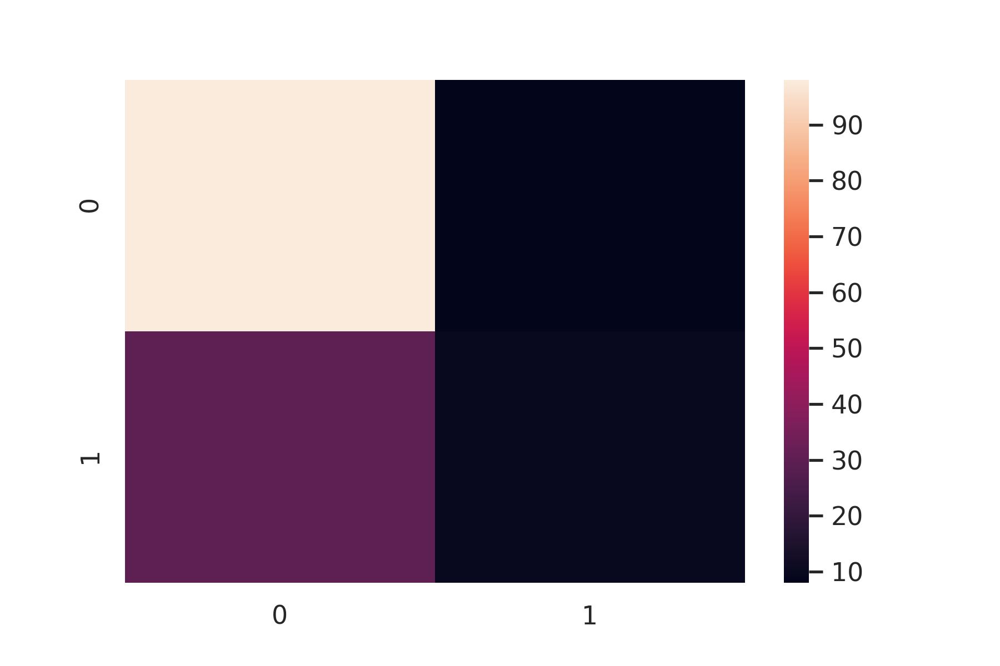

Prediction section:
Based on the data such as Arsenic Levels, pH, Zinc & Chlorine concentrations, TDS, a prediction model was built to classify & predict the possibility of an area being contaminated with high levels of Arsenic. I used a Logistic regression model for this purpose and the model classified an area into 0 (safe zone) or 1 (Arsenic affected zone) based on data that was input. This shows how predictive analysis models can be used to find the relationship between variables and predict the probability of an event happening in the future. Such a model could be used to identify hotspots for further action and safe zones that are safe to be used.
.png)
Below is an example of the results the model shows based on the data inputted:
.png)
.png)
The examples above showed predictions given by my model to help predict the possibility of an area having high levels of Arsenic on the basis of physical features through logistic regression. Zone 1 was predicted to be safe whereas Zone 2 has a high probability of being contaminated with Arsenic
Confusion matrix is a table which describes the performance of a prediction model. A confusion matrix contains the actual values and predicted values. The confusion matrix of my prediction model can be seen below:
The accuracy score of my model comes out to be 69%. This is possibly due to innaccuracies and limitations in my dataset. Overall, finding data was a tedious task for the model. Also, I expected more correlation with variables I used than what I got. In the future, I plan on including geological features (organic content, silt content) along with other features since academic research has shown that Arsenic contamination depends a lot on geological parameters which I didn't consider. I also plan on using larger and more reliable datasets.
Case study: IIT Kharagphur AI based prediction model
IIT Kharagpur have developed an AI model for detecting Arsenic Levels in groundwater based on geoscience. Researchers from IIT Kharagpur have successfully predicted the distribution of groundwater arsenic and human health risk in the affected areas using AI algorithms on environmental and geological and human usage parameters
The model has shown a strong correlation of ‘surficial aquitard thickness’ and ‘groundwater-fed irrigation’ to regional-scale As-hazard. The model has been effective in classifying regins into high and low risk zones and quantifying number of people exposed. According to the model, the worst affected zones are the districts of Nadia (93%) and Murshidabad (82%)
It proves as a great learning point for me since it shows how geographic features could be effective at predicting Arsenic Levels and have a stronger correlation with the problem. The model has successfully modeled distribution of groundwater contaminants and find safe zones for drinking.